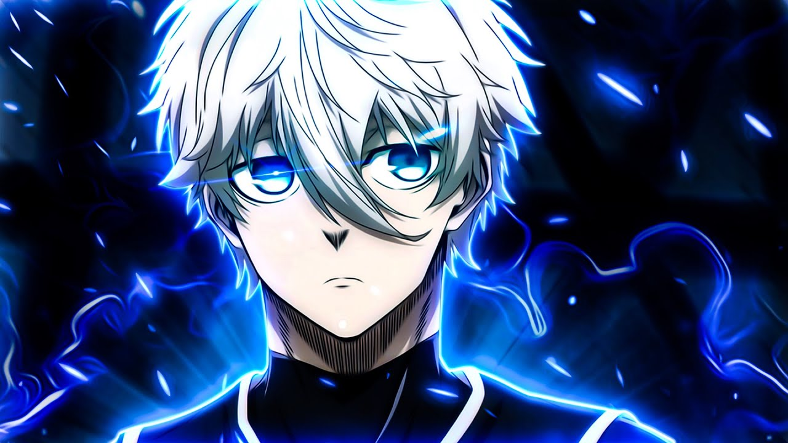
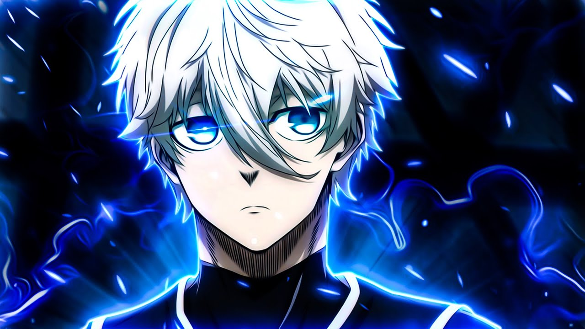

Seishiro Nagi
Seishiro Nagi Blue Lock Projesi için yarışan bir isim Neo Egoist Ligi'nde İngiltere'nin Manshine Cityyan ürün Blue Lock - Episode Nagi'nin. Blue Lock'a ilk geldiğinde Nagi, Team V'nin bir üyesiydi ve belirlenen katmanındaki en iyi oyuncuydu. Blue Lock Eleven, Japonya U-20 takımına karşı oynadıktan sonra Nagi, projedeki en iyi oyunculardan biri olarak derecelendirildi.
Dış Görünüş
Nagi zayıf ama kaslı yapılı uzun boylu genç bir adamdır. Gözlerinin arasında V şeklinde bir saçak bırakan orta uzunlukta beyaz saçları olduğu gösterilir. Büyük irisleri olan gri renkli gözleri vardır. Lisedeyken Nagi, yakasında kademeli yıldız deseni bulunan beyaz bir blazer'dan oluşan bir okul üniforması giydi, ancak altına gömlek ve kravat yerine koyu renkli bir kapüşonlu giydi. Ayrıca, pantolon ve ayakkabı da giydi. Blue Lock'ta Nagi standart olarak verilen vücut kıyafetini (gri çizgili siyah) ve eşofman takımını giyer. Birinci Seçim sırasında , Takım V'nin #11 formasını giydi ve İkinci Seçim sırasında, Takım White'ın #7 formasını giydi.
 

Yetenekler
Arketipler Forvetler :Forvetler olarak da bilinirler, asıl amaçları gol atmaktır. Genellikle en çok dikkat çeken oyunculardır çünkü rolleri gol pozisyonunda olmak üzere tasarlanmıştır. Ayrıca rakip takım topu saha dışına attığında penaltı ve köşe vuruşlarında da yer alırlar. Normalde oyunun başında ve devre arasında oyuna başlamakla görevli oyunculardır.
Yaratıcı Orta Saha Oyuncusu : Yaratıcı orta saha oyuncuları, genellikle hiçbir şeyin olası görünmediği durumlarda takım için gol atma fırsatları yaratabilen orta saha oyuncularıdır. Genellikle iyi top kontrolüne, pas yeteneğine ve harekete sahiptirler ve vizyon ve topla zeka ile kutsanırlar.
Yaratıcı Tuzak : Nagi, arkasında bir defans oyuncusu varken topa yaklaştığında, ilk dokunuşunu kullanarak topu onların omuzlarının üzerinden atlatabilir ve onları geçebilir.
Gökyüzünden Yüksek Hava Flaşı Geçişi : Nagi, kendisine saldırıldığında, saldırganın müdahalesini kullanarak saldırganın sırtında döner. Daha sonra elini saldırganın sırtına koyarak kendini tornado dönüşü yapar ve yüksek hızlı bir pas atar.
Sayfa başına dön